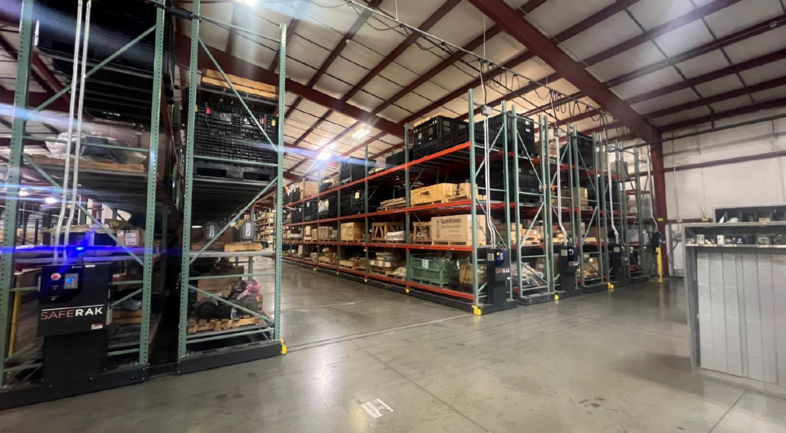
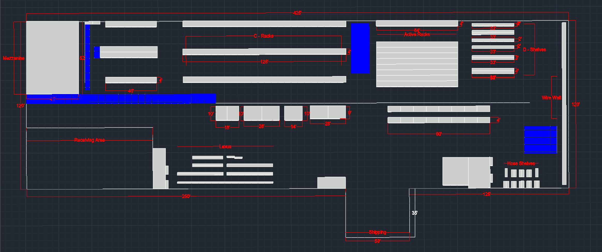
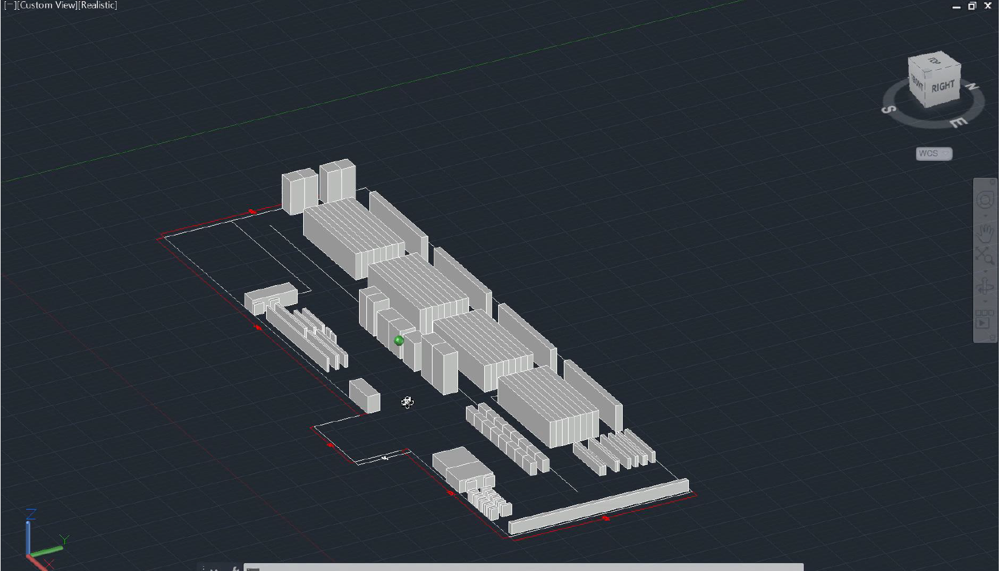

CAD · Facilities · Manufacturing Systems
North American Storeroom Standardization
A 15-site current-state study combining field measurement, AutoCAD mapping, cross-site comparison, and recommendations for a more consistent manufacturing support system.
My Contribution
What I DId
This was a project that I practically launched. My contributions were the first steps towards this initiative.
Collected field measurements and observations across manufacturing storeroom environments.
Created AutoCAD maps that turned physical layouts into comparable technical documentation.
Coordinated with remote site contacts when direct travel was not possible to obtain the required data.
Compared layouts and operating practices while separating site-specific constraints from repeatable opportunities.
Synthesized findings into recommendations and leadership-facing communication for future standardization.
The Problem
What needed to be solved?
Each facility had a different layout, operating history, and local constraints. From a planning perspective, without consistent documentation, comparing sites and identifying a useful common standard was difficult. From an operating standpoint, this lack of standardization led to inefficiencies and increased complexity in managing and optimizing each location.
My Approach
How I attacked it.
I combined direct field work with CAD documentation and cross-site analysis. Rather than assuming every site should become identical, I focused on identifying common principles and process gaps that remained useful despite local differences.
Impact
Why the work mattered.
The work created a cross-site view of the current state, highlighted process and layout opportunities, and gave engineering and leadership a documented basis for future standardization decisions.
Process Notes
From Start to Finish
Capture the physical current state with field measurements and direct observation.
Convert site conditions into consistent AutoCAD documentation.
Look across locations for recurring patterns, gaps, and differences.
Separate necessary local exceptions from opportunities that can be standardized.
Translate the analysis into practical recommendations and stakeholder communication.
Project Visuals
From Physical to Digital.
Selected visuals show the physical documentation of the existing storeroom condition to creating standardized 2D and 3D representations for comparison and planning.



Takeaway